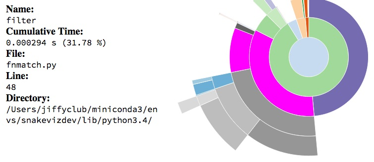

Completion profiling¶
Profiling avec cProfile, memory_profiler, pyinstrument, snakeviz.
line_profiler ne semble pas plus être maintenu.
[1]:
%matplotlib inline
Setup¶
Function to profile¶
[2]:
from mlstatpy.nlp.completion import CompletionTrieNode
def gain_dynamique_moyen_par_mot(queries, weights):
per = list(zip(weights, queries))
total = sum(weights) * 1.0
trie = CompletionTrieNode.build([(None, q) for _, q in per])
trie.precompute_stat()
trie.update_stat_dynamic()
wks = [(w, p, len(w) - trie.min_keystroke0(w)[0]) for p, w in per]
wks_dyn = [(w, p, len(w) - trie.min_dynamic_keystroke(w)[0]) for p, w in per]
wks_dyn2 = [(w, p, len(w) - trie.min_dynamic_keystroke2(w)[0]) for p, w in per]
gain = sum(g * p / total for w, p, g in wks)
gain_dyn = sum(g * p / total for w, p, g in wks_dyn)
gain_dyn2 = sum(g * p / total for w, p, g in wks_dyn2)
ave_length = sum(len(w) * p / total for p, w in per)
return gain, gain_dyn, gain_dyn2, ave_length
Data¶
[3]:
from mlstatpy.data.wikipedia import download_titles
file_titles = download_titles(country="fr")
[4]:
len(file_titles)
[4]:
33
[5]:
from mlstatpy.data.wikipedia import enumerate_titles
list_titles = list(
sorted(set(_ for _ in enumerate_titles(file_titles) if "A" <= _[0] <= "Z"))
)
[6]:
import random
sample1000 = random.sample(list_titles, 1000)
with open("sample1000.txt", "w", encoding="utf-8") as f:
f.write("\n".join(sample1000))
Standard modules¶
cProfile¶
[7]:
import cProfile, io, pstats, os
def toprofile0(lines):
gain_dynamique_moyen_par_mot(lines, [1.0] * len(lines))
def doprofile(lines, filename):
pr = cProfile.Profile()
pr.enable()
toprofile0(lines)
pr.disable()
s = io.StringIO()
ps = pstats.Stats(pr, stream=s).sort_stats("cumulative")
ps.print_stats()
rem = os.path.normpath(os.path.join(os.getcwd(), "..", "..", ".."))
res = s.getvalue().replace(rem, "")
ps.dump_stats(filename)
return res
[8]:
r = doprofile(sample1000, "completion.prof")
print(r)
1289418 function calls in 1.487 seconds
Ordered by: cumulative time
ncalls tottime percall cumtime percall filename:lineno(function)
1 0.000 0.000 1.487 1.487 /tmp/ipykernel_54937/4045418276.py:4(toprofile0)
1 0.075 0.075 1.487 1.487 /tmp/ipykernel_54937/1707536480.py:4(gain_dynamique_moyen_par_mot)
1 0.314 0.314 1.107 1.107 /mlstatpy/nlp/completion.py:442(precompute_stat)
16034 0.167 0.000 0.652 0.000 /mlstatpy/nlp/completion.py:531(merge_completions)
16034 0.308 0.000 0.319 0.000 {built-in method builtins.__build_class__}
1 0.055 0.055 0.204 0.204 /mlstatpy/nlp/completion.py:477(update_stat_dynamic)
36051 0.081 0.000 0.094 0.000 /mlstatpy/nlp/completion.py:554(<listcomp>)
17034 0.046 0.000 0.088 0.000 /mlstatpy/nlp/completion.py:594(update_dynamic_minimum_keystroke)
1 0.045 0.045 0.075 0.075 /mlstatpy/nlp/completion.py:205(build)
35841 0.021 0.000 0.044 0.000 {built-in method builtins.all}
309964 0.041 0.000 0.041 0.000 {built-in method builtins.len}
17034 0.030 0.000 0.034 0.000 /mlstatpy/nlp/completion.py:627(second_step)
16034 0.023 0.000 0.029 0.000 /mlstatpy/nlp/completion.py:581(update_minimum_keystroke)
16035 0.006 0.000 0.028 0.000 {method 'extend' of 'collections.deque' objects}
17035 0.018 0.000 0.028 0.000 /mlstatpy/nlp/completion.py:90(unsorted_iter)
97520 0.027 0.000 0.027 0.000 /mlstatpy/nlp/completion.py:462(<genexpr>)
16034 0.017 0.000 0.023 0.000 {built-in method builtins.sorted}
1001 0.014 0.000 0.021 0.000 /mlstatpy/nlp/completion.py:126(leaves)
110289 0.019 0.000 0.019 0.000 {built-in method builtins.hasattr}
17034 0.017 0.000 0.019 0.000 /mlstatpy/nlp/completion.py:664(init_dynamic_minimum_keystroke)
17034 0.015 0.000 0.018 0.000 /mlstatpy/nlp/completion.py:15(__init__)
116511 0.016 0.000 0.016 0.000 {method 'values' of 'dict' objects}
52086 0.015 0.000 0.015 0.000 {method 'append' of 'list' objects}
500 0.005 0.000 0.014 0.000 ~/vv/this/lib/python3.10/site-packages/ipykernel/ipkernel.py:775(_clean_thread_parent_frames)
3000 0.013 0.000 0.013 0.000 /mlstatpy/nlp/completion.py:263(find)
23123 0.010 0.000 0.010 0.000 {built-in method builtins.min}
48102 0.009 0.000 0.009 0.000 {method 'extend' of 'list' objects}
54873 0.008 0.000 0.008 0.000 {method 'popleft' of 'collections.deque' objects}
1 0.001 0.001 0.008 0.008 /tmp/ipykernel_54937/1707536480.py:10(<listcomp>)
1 0.001 0.001 0.008 0.008 /tmp/ipykernel_54937/1707536480.py:11(<listcomp>)
20017 0.008 0.000 0.008 0.000 {built-in method builtins.max}
17033 0.007 0.000 0.007 0.000 /mlstatpy/nlp/completion.py:48(_add)
1 0.001 0.001 0.007 0.007 /tmp/ipykernel_54937/1707536480.py:12(<listcomp>)
1000 0.001 0.000 0.007 0.000 /mlstatpy/nlp/completion.py:328(min_keystroke0)
1000 0.002 0.000 0.007 0.000 /mlstatpy/nlp/completion.py:364(min_dynamic_keystroke)
250 0.002 0.000 0.007 0.000 ~/vv/this/lib/python3.10/site-packages/ipykernel/ipkernel.py:790(<setcomp>)
16034 0.007 0.000 0.007 0.000 /mlstatpy/nlp/completion.py:541(<listcomp>)
36840 0.007 0.000 0.007 0.000 {method 'append' of 'collections.deque' objects}
1000 0.001 0.000 0.006 0.000 /mlstatpy/nlp/completion.py:400(min_dynamic_keystroke2)
16034 0.006 0.000 0.006 0.000 /mlstatpy/nlp/completion.py:537(Fake)
51102 0.006 0.000 0.006 0.000 {method 'pop' of 'list' objects}
17034 0.006 0.000 0.006 0.000 /mlstatpy/nlp/completion.py:547(<genexpr>)
1750 0.004 0.000 0.004 0.000 /usr/lib/python3.10/threading.py:1145(ident)
32068 0.003 0.000 0.003 0.000 {method 'items' of 'dict' objects}
18534 0.003 0.000 0.003 0.000 {built-in method builtins.isinstance}
250 0.002 0.000 0.003 0.000 /usr/lib/python3.10/threading.py:1478(enumerate)
5 0.000 0.000 0.002 0.000 {built-in method builtins.sum}
1 0.000 0.000 0.000 0.000 /tmp/ipykernel_54937/1707536480.py:7(<listcomp>)
1001 0.000 0.000 0.000 0.000 /tmp/ipykernel_54937/1707536480.py:16(<genexpr>)
1001 0.000 0.000 0.000 0.000 /tmp/ipykernel_54937/1707536480.py:13(<genexpr>)
250 0.000 0.000 0.000 0.000 {method '__exit__' of '_thread.RLock' objects}
1000 0.000 0.000 0.000 0.000 {method 'keys' of 'dict' objects}
1001 0.000 0.000 0.000 0.000 /tmp/ipykernel_54937/1707536480.py:14(<genexpr>)
1001 0.000 0.000 0.000 0.000 /tmp/ipykernel_54937/1707536480.py:15(<genexpr>)
1 0.000 0.000 0.000 0.000 {method 'disable' of '_lsprof.Profiler' objects}
Others informations when profiling¶
memory_profiler¶
See memory_profiler. Version 0.56 is bugged (see #258).
[10]:
from memory_profiler import profile
%load_ext memory_profiler
[11]:
%memit toprofile0(sample1000)
peak memory: 547.55 MiB, increment: 0.00 MiB
[12]:
from io import StringIO
st = StringIO()
@profile(stream=st)
def toprofile(lines):
gain_dynamique_moyen_par_mot(lines, [1.0] * len(lines))
toprofile(sample1000)
ERROR: Could not find file /tmp/ipykernel_54937/1913397401.py
[13]:
%%file temp_mem_profile.py
from mlstatpy.nlp.completion import CompletionTrieNode
from memory_profiler import profile
@profile(precision=4)
def gain_dynamique_moyen_par_mot(queries, weights):
per = list(zip(weights, queries))
total = sum(weights) * 1.0
res = []
trie = CompletionTrieNode.build([(None, q) for _, q in per])
trie.precompute_stat()
trie.update_stat_dynamic()
wks = [(w, p, len(w) - trie.min_keystroke0(w)[0]) for p, w in per]
wks_dyn = [(w, p, len(w) - trie.min_dynamic_keystroke(w)[0]) for p, w in per]
wks_dyn2 = [(w, p, len(w) - trie.min_dynamic_keystroke2(w)[0]) for p, w in per]
gain = sum(g * p / total for w, p, g in wks)
gain_dyn = sum(g * p / total for w, p, g in wks_dyn)
gain_dyn2 = sum(g * p / total for w, p, g in wks_dyn2)
ave_length = sum(len(w) * p / total for p, w in per)
return gain, gain_dyn, gain_dyn2, ave_length
@profile(precision=4)
def toprofile():
with open("sample1000.txt", "r", encoding="utf-8") as f:
lines = [_.strip("\n\r ") for _ in f.readlines()]
gain_dynamique_moyen_par_mot(lines, [1.0] * len(lines))
toprofile()
Writing temp_mem_profile.py
[14]:
import sys
cmd = sys.executable
from sphinx_runpython.runpython import run_cmd
cmd += " -m memory_profiler temp_mem_profile.py"
out, err = run_cmd(cmd, wait=True)
print(out)
Filename: temp_mem_profile.py
Line # Mem usage Increment Occurrences Line Contents
=============================================================
6 45.8438 MiB 45.8438 MiB 1 @profile(precision=4)
7 def gain_dynamique_moyen_par_mot(queries, weights):
8 45.8438 MiB 0.0000 MiB 1 per = list(zip(weights, queries))
9 45.8438 MiB 0.0000 MiB 1 total = sum(weights) * 1.0
10 45.8438 MiB 0.0000 MiB 1 res = []
11 52.5469 MiB 6.7031 MiB 1003 trie = CompletionTrieNode.build([(None, q) for _, q in per])
12 60.0234 MiB 7.4766 MiB 1 trie.precompute_stat()
13 69.5625 MiB 9.5391 MiB 1 trie.update_stat_dynamic()
14 69.5625 MiB 0.0000 MiB 1003 wks = [(w, p, len(w) - trie.min_keystroke0(w)[0]) for p, w in per]
15 69.5625 MiB 0.0000 MiB 1003 wks_dyn = [(w, p, len(w) - trie.min_dynamic_keystroke(w)[0]) for p, w in per]
16 69.5625 MiB 0.0000 MiB 1003 wks_dyn2 = [(w, p, len(w) - trie.min_dynamic_keystroke2(w)[0]) for p, w in per]
17 69.5625 MiB 0.0000 MiB 2003 gain = sum(g * p / total for w, p, g in wks)
18 69.5625 MiB 0.0000 MiB 2003 gain_dyn = sum(g * p / total for w, p, g in wks_dyn)
19 69.5625 MiB 0.0000 MiB 2003 gain_dyn2 = sum(g * p / total for w, p, g in wks_dyn2)
20 69.5625 MiB 0.0000 MiB 2003 ave_length = sum(len(w) * p / total for p, w in per)
21 69.5625 MiB 0.0000 MiB 1 return gain, gain_dyn, gain_dyn2, ave_length
Filename: temp_mem_profile.py
Line # Mem usage Increment Occurrences Line Contents
=============================================================
24 45.5859 MiB 45.5859 MiB 1 @profile(precision=4)
25 def toprofile():
26 45.8438 MiB 0.0000 MiB 2 with open("sample1000.txt", "r", encoding="utf-8") as f:
27 45.8438 MiB 0.2578 MiB 1003 lines = [_.strip("\n\r ") for _ in f.readlines()]
28 69.5625 MiB 23.7188 MiB 1 gain_dynamique_moyen_par_mot(lines, [1.0] * len(lines))
Static Visualization¶
pyinstrument¶
See pyinstrument.
[16]:
from pyinstrument import Profiler
profiler = Profiler()
profiler.start()
toprofile0(sample1000)
profiler.stop()
out = profiler.output_text(unicode=False, color=False)
print(out.replace("\\", "/"))
_ ._ __/__ _ _ _ _ _/_ Recorded: 12:44:24 Samples: 862
/_//_/// /_/ / //_// / //_'/ // Duration: 1.340 CPU time: 1.345
/ _/ v4.7.3
Profile at /tmp/ipykernel_54937/259320473.py:4
1.338 ZMQInteractiveShell.run_ast_nodes IPython/core/interactiveshell.py:3418
`- 1.337 <module> ../../../tmp/ipykernel_54937/259320473.py:1
`- 1.337 toprofile0 ../../../tmp/ipykernel_54937/4045418276.py:4
`- 1.337 gain_dynamique_moyen_par_mot ../../../tmp/ipykernel_54937/1707536480.py:4
|- 0.683 CompletionTrieNode.precompute_stat mlstatpy/nlp/completion.py:442
| |- 0.467 _Stat.merge_completions mlstatpy/nlp/completion.py:531
| | |- 0.236 [self] mlstatpy/nlp/completion.py
| | |- 0.110 __build_class__ <built-in>
| | `- 0.076 <listcomp> mlstatpy/nlp/completion.py:554
| | `- 0.068 [self] mlstatpy/nlp/completion.py
| |- 0.126 [self] mlstatpy/nlp/completion.py
| |- 0.025 _Stat.update_minimum_keystroke mlstatpy/nlp/completion.py:581
| | `- 0.020 [self] mlstatpy/nlp/completion.py
| |- 0.022 <genexpr> mlstatpy/nlp/completion.py:462
| `- 0.016 CompletionTrieNode.leaves mlstatpy/nlp/completion.py:126
|- 0.408 build mlstatpy/nlp/completion.py:205
| |- 0.382 [self] mlstatpy/nlp/completion.py
| `- 0.014 CompletionTrieNode.__init__ mlstatpy/nlp/completion.py:15
`- 0.220 CompletionTrieNode.update_stat_dynamic mlstatpy/nlp/completion.py:477
|- 0.104 int.update_dynamic_minimum_keystroke mlstatpy/nlp/completion.py:594
| |- 0.057 [self] mlstatpy/nlp/completion.py
| `- 0.041 second_step mlstatpy/nlp/completion.py:627
| `- 0.037 [self] mlstatpy/nlp/completion.py
|- 0.055 [self] mlstatpy/nlp/completion.py
|- 0.024 CompletionTrieNode.unsorted_iter mlstatpy/nlp/completion.py:90
| `- 0.017 [self] mlstatpy/nlp/completion.py
`- 0.023 _Stat.init_dynamic_minimum_keystroke mlstatpy/nlp/completion.py:664
`- 0.022 [self] mlstatpy/nlp/completion.py
Javascript Visualization¶
SnakeViz¶
[17]:
%load_ext snakeviz
L’instruction qui suit lance l’explorateur par défaut avec les données du profilage.
[16]:
# %snakeviz toprofile0(sample1000)
[19]:
from IPython.display import Image
Image("images/func_info.jpg", width=400)
[19]:

vprof, py-spy¶
See vprof or py-spy. The second one outputs a SVG file easy to handle.
[18]:
# from vprof import profiler
# needs to be run from a file not from a notebook
# profiler.run(toprofile0, 'cmh', args=(sample1000,), host='localhost', port=8000)
[20]:
from IPython.display import Image
Image("images/vprof.jpg", width=800)
[20]:

[20]: